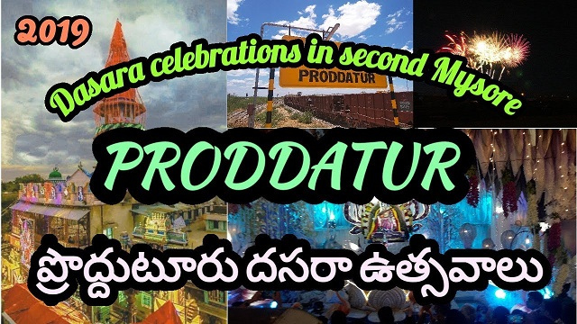

Location
proddatur is located in Andhra which is in India
History 
Proddatur has a great history of celebrating dussehra festival.
Tourist Places
If you're ever been in Proddatur, Dont forget to visit Gandi kota which is known as Grand Canyon of India